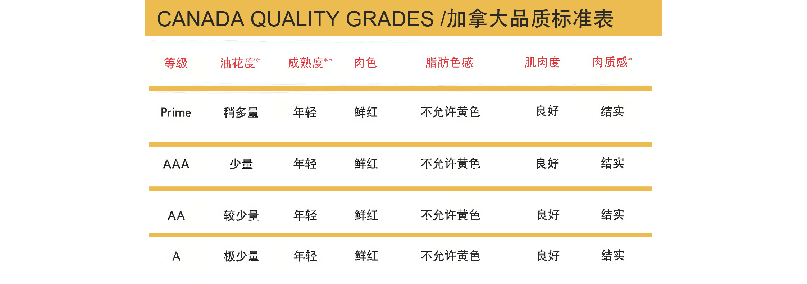

来自加拿大的顶级牛肉
PREMIUM & SELECT BEEF FROM CANADA
加拿大政府和加拿大牛肉业正在与中国政府密切合作。中国已经正式同意与加拿大官方合作，为加拿大牛肉进入中国市场提供全面开放的渠道。加拿大牛肉业满足并超过所有食品质量标准和认证，包括无激素产品

The Canadian government and the Canadian beef industry is now working very closely with the Government of China to now open
full access to the Chinese market for Canadian beef. China has formally agreed to work with Canadian officials
to provide full and open access for Canadian beef. The Canadian Beef industry meets and exceeds all food standards
and certificates, including hormone free products.

加拿大牛肉的优势 CANADA'S BEEF ADVANTAGE
加拿大肉牛饲养产业至今已有三百多年的悠久历史，肉牛生产也是加拿大农业主要的发展动力之一。早在西元1600年前，第一批移民定居加拿大时就依靠着牛只提供的肉、牛奶和皮革等生活所需品。经过一代代的传承，如今随着全国牧场数量快速增加；肉牛畜牧产业也影响了加拿大的经济。至今加拿大牧场和农场已拥有超过一千四百万头的肉牛。
加拿大独特的干爽气候让繁殖配种不用受到气候的影响。例如生存在炎热气候国家的牛只就需要培育特殊的耐热基因来适应环境，但这也将影响到肉质的口感与质量。得天独厚的气候让加拿大的牛只拥有优良的质量与肉质。不同于其他国家只使用牧草𫗭养牛，加拿大选择含有高品质与高营养价值的玉米及大麦来饲养。因为选用这种高蛋白质的饲料，使加拿大牛肉甘香浓郁、鲜嫩幼滑。宜人的气候让加拿大成为最适合培育优质谷物的国家，也同时被称为世界上最大的谷物生产国之一。西部省份就拥有八万多的农民种植大麦与小麦，而东部的气候则非常适合玉米的生长。有如此丰沛的谷物来源，让加拿大能大量出口以谷物饲养为主的牛肉与小牛肉。
加拿大牛业以饲养BosTaurus(温带牛)品种为主，其中包含了英国安格斯（Angus）牛, 海福特（Hereford）, 夏洛来（Charolais）牛，西门塔尔（Simmental）牛和利木赞（Limousin）牛的品种等。这些肉牛都是长久以来专业培育出的品种。此外杂交育种在加拿大是受到限制的，为了确保牛只的优良牛种与质量，相较于其他竞争者使用交叉配种的方式培育新牛种，加拿大在肉牛品种纯正度上更胜一筹。 加拿大食品安全系统享有国际声望,被评分为世界上最安全的系统之一。加拿大食品检验署通过施行食品安全和营养质量规例，来保障加拿大的食品供应。加拿大食品检验署不仅监管所有出口牛肉及牛肉产品的公司，也被联邦法律授权管理与执行加拿大肉品检验法案。检验署同时也设立动物卫生的标准并执行相关的检验。
加拿大法律规定所有动物都必须经过专员检查，是否有潜在疾病与伤害。加拿大食品检验署完全依照肉类规例来确认、隔离、移除及处理有潜在疾病问题的动物。加拿大食品检验署与加拿大各出口市场的有关部门保持密切接触，为确保出口至各国客户的肉品都达到最高之安全标准
Canada beef cattle breeding industry has been three hundred years of a long history, beef cattle production is also one of
the main driving force for the development of agriculture in Canada. As early as 1600 AD, the first immigrants
settled in Canada to rely on cattle to provide meat, milk and leather and other necessities of life. After
a generation of inheritance, now with the rapid increase in the number of pastures; beef cattle animal husbandry
industry also affected the Canadian economy. So far the Canadian pastures and farms already have more than
14 million beef cattle.
Canada's unique dry climate makes breeding breeding unaffected by the climate. For example, the survival of cattle in hot climate countries need to cultivate a special heat-resistant genes to adapt to the environment, but it will also affect the meat taste and quality. Unique weather makes the Canadian cattle have excellent quality and fleshy. Unlike other countries that use only forage feeding cattle, Canada chooses to contain high quality and high nutritional value of corn and barley for rearing. Because the use of this high-protein feed, so that Canadian beef Ganxiang rich, fresh and smooth. The pleasant climate makes Canada the most suitable country for cultivating quality cereals, and is also known as one of the world's largest producers of grain. The western provinces have more than 80,000 farmers planted with barley and wheat, while the eastern climate is very suitable for the growth of corn. There is such a rich source of grain, so that Canada can be a large number of exports to grain-based beef and veal.
Canadian cattle industry to feed BosTaurus (temperate cattle) varieties, which includes the British Angus (Angus) cattle, Hereford (Hereford), Charolais (Charolais) cattle, Simmental (Simmental) cattle and limestone Praise (Limousin) varieties of cattle and so on. These beef cattle are long cultivated by professional breeds. In addition, crossbreeding is limited in Canada, and in order to ensure the excellent breeds and quality of cattle, compared to other competitors using cross-breeding way to cultivate new breeds, Canada in the beef cattle purity is superior.
Canada's food safety system enjoys international prestige and is rated as one of the safest systems in the world. The Canadian Food Inspection Agency protects food supplies from Canada through the implementation of food safety and nutrition quality regulations. The Canadian Food Inspection Agency not only regulates all companies that export beef and beef products, but are also authorized by the federal law to administer and enforce the Canadian Meat Inspection Act. The inspection department also sets standards for animal hygiene and performs the relevant tests.
Canadian law stipulates that all animals must be examined by the Commissioner for potential illness and injury. The Canadian Food Inspection Agency is in full compliance with the meat regulations to identify, isolate, remove and dispose of animals with potential disease problems. The Canadian Food Inspection Agency maintains close contact with the relevant departments of the export markets in Canada to ensure that the maximum safety standards are reached for meat products exported to national customers
Canada's unique dry climate makes breeding breeding unaffected by the climate. For example, the survival of cattle in hot climate countries need to cultivate a special heat-resistant genes to adapt to the environment, but it will also affect the meat taste and quality. Unique weather makes the Canadian cattle have excellent quality and fleshy. Unlike other countries that use only forage feeding cattle, Canada chooses to contain high quality and high nutritional value of corn and barley for rearing. Because the use of this high-protein feed, so that Canadian beef Ganxiang rich, fresh and smooth. The pleasant climate makes Canada the most suitable country for cultivating quality cereals, and is also known as one of the world's largest producers of grain. The western provinces have more than 80,000 farmers planted with barley and wheat, while the eastern climate is very suitable for the growth of corn. There is such a rich source of grain, so that Canada can be a large number of exports to grain-based beef and veal.
Canadian cattle industry to feed BosTaurus (temperate cattle) varieties, which includes the British Angus (Angus) cattle, Hereford (Hereford), Charolais (Charolais) cattle, Simmental (Simmental) cattle and limestone Praise (Limousin) varieties of cattle and so on. These beef cattle are long cultivated by professional breeds. In addition, crossbreeding is limited in Canada, and in order to ensure the excellent breeds and quality of cattle, compared to other competitors using cross-breeding way to cultivate new breeds, Canada in the beef cattle purity is superior.
Canada's food safety system enjoys international prestige and is rated as one of the safest systems in the world. The Canadian Food Inspection Agency protects food supplies from Canada through the implementation of food safety and nutrition quality regulations. The Canadian Food Inspection Agency not only regulates all companies that export beef and beef products, but are also authorized by the federal law to administer and enforce the Canadian Meat Inspection Act. The inspection department also sets standards for animal hygiene and performs the relevant tests.
Canadian law stipulates that all animals must be examined by the Commissioner for potential illness and injury. The Canadian Food Inspection Agency is in full compliance with the meat regulations to identify, isolate, remove and dispose of animals with potential disease problems. The Canadian Food Inspection Agency maintains close contact with the relevant departments of the export markets in Canada to ensure that the maximum safety standards are reached for meat products exported to national customers